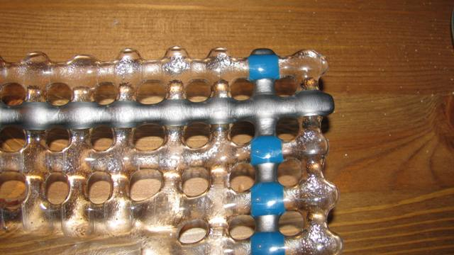

|
Pohjapuolen laatu Olen tehnyt riipuksia syväfuusauksella. Ongelmana on että taustapuoli jää karkeaksi, se kopioi erotusaineen piinnan. Olen levittänyt erotusaineen ruiskuttamalla. Se auttaa hiukan mutta ei riittävästi. karkea pinta tuntuu epämiellyttävältä ihoa vasten. OP | ||||||||||||||||||
| Perinteinen tapa on hioa ja jopa kiillottaa. Mräkähiomapaperi tai timanttilaikka tekevät työn aika nopeasti. Aloitetaan karkealla, 60-80 grit, jatketaan 120, 240 ja 500. S illoin on jo satiinin pehmeä pinta. Siitäeteenpäin hionta 800 grit ja kiillotusasine. Jos aluslasina käyttää irididoitu lasia, se kopioi pintaa vähemmän, eikä siihen tartu erotusanetta. Kolmas konsti on käyttää uunilevynä kipsilaattaa. Valamalla 2 cm kipsiseoksen ikkunalasia vastaan saa melkein kiiltävän sileän pinnan. Valuseos on2/3 kipsiä ja 1/3 alumiinioksidia. Laatta kestää yleensö usita polttoja. Poltettu laatta on hauras ja sitä on kohdeltava varoen. | ||||||||||||||||||
| Lasia valui uuniin Markku R: Valutyön muotti kaatui ja lasia valui uunin pohjalle ja vastuksiin. |
||||||||||||||||||
| Jos uuni on fiiberillä vuorattu, kuumenna reippaasti 600 asteeseen. Katkaise virta ja avaa uuni. Lasi jäähtyy ja hilseilee irti vastuksista. Jos joku lasihelmi jää, se tipuu uunin pohjalle seuraavassa poltossa. Fiiberipohjalta lasin voi nostaa pois, pikkuisen eristeen pintaa tulee mukana. Tiiliuunin pohjalta lasi ei irtoa yhtä helposti, ellei pohjaa ole käsitelty erotusaineella. Lasin mukana tulee helposti tiilen paloja.. Ne voi paikata. katso Tiiliuunin hoito | ||||||||||||||||||
| Kierrätyslasi Eini: Hei Lauri. Olen selaillut taas netissä sivujasi ja siellä näin että olit tehnyt Kierrätyslasista (kevät,kesä?)oliko ne maljakoita/vateja? Niistä olisinkin nyt kiinnostunut miten olet ne tehnyt . Olisin ikionnellinen jos minulle kerrot miten ne tehdään. |
||||||||||||||||||
|
Voi kun kiva että joku kirjoittaa tännepäin.
Edellisestä saapuneesta kirjeestä on melkein puoli vuotta!
Tuon
vuodenaika sarjan idea on materiaalissa.
Lasinpuhaltajilla on tapana värjätä töitään kierittämällä tosikuumaa
(900+ astetta) aihiota
värillisessä lasijauhossa- Se sulaa kirkkaan peruslasin pintaan kiinni.
Kun sitten puhallettu kupla leikataan vaasiksi tai kulhoksi, pillin
puoleinen
osa menee roskiin. Sitä sanotaan pinttilasiksi.
1. Ostan lasinpuhaltajalta tuota - hänelle arvotonta - pinttiä.
2. Siitä rakennetaan keko uunilevylle ja sulatetaan kuumassa niin että
se leviää 6-9 mm paksuksi lammikoksi. Värit ovat siis alkujaan
kalvomaisina lasiklönttien pinnassa. Sulaessa ne litistyvät laakeammiksi
pinnoiksi jotka jäävät osin limittäin lasin sisään.
3. Tykkään jättää reunat sellaisiksi kun tulee. Jos leikkaa
kuitupaperista renkaan muotiksi
saa pyöreän.
Muun, tavallisen kierrätyslasin kanssa tulee yleensä
yhteensopivuusongelmia. -lauri |
||||||||||||||||||
| Materiaalit lasin välissä Sini Ruostumatonta olevat teräslenkit mustuivat ja osa lasista muuttui sameaksi. Tein liiman ohjeistasi liisteristä, jossa ei ollut mainintaa homeenestoaineesta, olikohan se sameuden syy kenties? Entäpä onko Kanthal -lanka eri asia, kuin ruostumaton teräslanka? Hopeaa en malttanut käyttää. |
||||||||||||||||||
|
Inkluusioita (=muiden aineiden sulatusta lasin väliin) koskeva luku on
edelleen
kirjoittamatta. Itse en ole niitä juurikaan käyttänyt, joten jakso vaatii paljon
koetöitä.
Ikä painaa. Nyt helteillä en ole uskaltanut olla työhuoneella kokeilemassa.
Toisen käden tietoa: Ruostumatonta terästä on lukemattomia laatuja. kaikissa niissä on rautaan lisätty jotakin, joka saattaa värjäytyä. Puhdas rauta palaa seepian väriseksi eli ruosteen ruskeaksi. Kanthal-lanka, jota olen Varniasta ostanut ripustuslangaksi, pysyy melkein kirkkaan ainakin 820 C asti. Korkeammassa lämmössä se mustuu ja muuttuu hauraaksi. Katso uunin vastuksia!. Kanthal-lanka on seosteeu alumiinilla joka tavallisissa oloissa muodostaa syöpymistä ehkäisevän oksidikalvon langan pintaan. Hopeaa on kahta lajia, tavallinen 750/1000 ja loput lähinnä kuparia ja ns täyshopea 999/1000. Molempien kiderakenne muuttuu kuumennuksessa ja metalli pehmiää ja taipuu helposti poikki. Sen voi kovettaa polton jälkeen takomalla. Lanka pihtien tms väliin ja vasaralla päälle niin että muuttuu litteämmäksi. Tavallisen hopean kupari liukenee lasiin sulatuslämmössä ja värjää lasin ympäriltään keltaiseksi. Täyshopea ei värjää ainakaan yhtä pahasti. |
||||||||||||||||||
| Kuparilankakin mustui aivan mustaksi läpinäkyvän lasin välissä. Olin > virkannut kukkia yms. niistä lasin väliin. Ilmeisesti liian kova kuumuus > poltossa? | ||||||||||||||||||
|
Kupari-inkluusiota olen hiukan kokeillut. Joskus se muuttuu
punaisemmaksi, joskus kun saa kyllin kauan hapettua vihreäksi. Oliko
kokeilemasi kuparilanka sähköjohdosta? Niissä on usein
emali-pinta eristeenä ja se saattaa palaa mustaksi. Mikaela lappalainen esitteli kurssillaan kivan inkluusiotekniikan. Hän oli rikkonut kudotusta tersvillasta tehdyn patasudon. Tuota kudottua teräslankaa oli sulateeu lasien väliin. Tuloksena oli kaunis mutsa neulekuvio. Tionen inkluusiotapa jota olen alustavasti kkeillut on ottaa jokin urgaaninen aihe, vaikka kukan lehti. Se kuivataan ja maalataan lasijauhon ja liiman seoksella. lasin välissä lehti itse palaa pois, mutta tuo värijauhe jää paikalleen muodostamaan kvion. -lauri ylös |
||||||||||||||||||
|
Lasin leviäminen Sini : Hei! Aikaa on kulunut kun sain Sinulta rohkaisua kokeilla lasinsulatusta keramiikan matalapolttouunilla: - Iso Kiitos siitä! Yksi täysi uunillinen ns. romulaseista tehtyjä riipuksia onnistui ensikertalaiseksi arvosanalla 8 -; kuten tyttäreni sanoi. Muutama suli kiinni toisiinsa (eri korut), |
||||||||||||||||||
|
Sanotaan että lasi haluaa olla 6 mm paksua. Siis ohuempi lasi vetäytyy
kasaan,
paksumpi leviää kunnes tuo 6 mm saavutetaan. Ilmiö on sama kuin
tiskipöydällä.
Pieni vesipisara kertyy palloksi, iso leviää kunnes on tasapaksu laikku.
Katso myös täääältä -lauri ylös |
||||||||||||||||||
|
kirjallisuusvinkkejä Satu |
||||||||||||||||||
|
Kerrankin helppo kysymys. Englanninkielisä kirjoja on pilvin pimein. Laatu vain vaihtelee
Olen koonnut luetteloa kirjallisuudesta ja kommentoinutkin niitä kirjoja jotka olen lukenut. Jos joku kiinnosta kysy siitä erikseen lisää. Kaikki uudet vinkit, varsinkin ruotsinkielisistä, ovat kovasti tervetulleita -lauri ylös |
||||||||||||||||||
|
Tikkujen taivutus Satu Ja sitten; haluaisin taivuttaa stringereitää. Ohuita olen taivuttanut kynttilän kanssa mutta tulee nokisiksi ja muutenkin vähän vaikeeta. | ||||||||||||||||||
| En minäkään ole onnisunut kovin hyvin tikkujen (stringerien) taivuttamisessa. Pitäisi löytää paksusydämisempi kynttilä. Joka tapauksessa tikku pitäisi pitää liekin vieressä/yläpuolella. Jos sen työntää viileänä keltaiseen liekkiin se nokeentuu. | ||||||||||||||||||
| Paksumpiin otin butaani? polttimen ja siinä riittikin tehoa mutta muotoiluon aika vaikeaa. Millaisia apuvälineitä olisi tähän hommaan? | ||||||||||||||||||
| Pienellä butaanipolttimella on tosi kuuma mutta kapea liekki. Minulla sem kanssa sulaa helposti tikut poikki tai taipuvat liian lyhyeltä matkalta jyrkästi. Sama konsti kuin yllä, liekin yläpuolella kuumennus. | ||||||||||||||||||
| Kokeilin uunilaattaa alusena ja sitten kierittää pyöreän uunijalan ympärille; onnistuinkin saamaan kaarevaa aikaiseksi mutta siniseen tankoon ilmestyi sateenkaaren värejä. Häipyvätkö värit poltossa vai onko muutos pysyvä? | ||||||||||||||||||
|
Kuullostaa aika hyvältä kikalta. Silloin pitäisi saada vaan leveä ja ei liiaqn kuuma liekki
jolloin uunilevyn pintaan ja tolpaan saisi varastoitumaan vähän lämpöä.
Tuohon värimuutokseen en osaa vastata.
-lauri ylös |
||||||||||||||||||
|
Friteillä maalaaminen Satu Fritit on kivoja mutta pelkään aina että ne liikkuu. Olen käyttänyt liimana Glastacia mutta myös tavallista Eri Keeperin tapaista askarteluliimaa joka on mielestäni hyvin samankaltaista kuin Elmerliima mutta halvempaa. Olen käyttänyt frittejä vain lasin päällä. Olisi kiva jos löytäisi jonkunn liiman tms. jolla voisi "piirtää" lasille ja sitten ripotella frittejä päälle. Onko sinulla vinkkejä? |
||||||||||||||||||
|
En ole paljoa frittimaalausta kokeillut, mutta nähnyt kyllä uskomattomia töitä.
Aloitetaan vaikeimmasta: Kuiva fritti Työ alkaa niin että ripotellaan frittiä lasille. Sitä voi rajata ja siirrellä kuiivalla, aika kovalla siveltimellä, palettiveitsen kärjellä ja muilla sopivilla välineillä. Kun työ on valmis, suihkutetaan fiksatiiviä tai hiuslakkaa pitämään fritti paikoillaan. Työ voi edetä vaiheittain, välillä poltetaan yksi kerros kiinni ja sitten jatketaan. Märälle pohjalle Lasin voi käsitellä liimaavalla aineella. Olen kokeillut 3M kontaktiliimaa spray-pullossa. Olen käsitellyt koko pinnan ja sisännyt hienoa lasijauhetta. Väri jää siihen, korjailuja ei voi tehdä. Ennen liiman levitystä voi tietysti tehdä kontaktimuovista maskin, joka rajaa mihin liima tarttuu. Varmaan voi jotain muuta sideainetta käyttää myös jolla voi maalata värittyvän alueen. Märkä maali Kolmas tekniikka on tehdä lasijauheesta ja sideaineesta maalia. En ole kokeillut, mutta kuullut hyviä kokemuksia neilikkaöljystä. Lue enemmän Frittityö -lauri ylös |
||||||||||||||||||
|
Graafinen kuva Satu Katsoin galleriasta töitäsi ja haluaisin tietää kuinka olet toteuttanut omakuvasi? Oletko laittanut opakvalkoisen päälle frittejä vai mitä mustaa? En oikein kuvasta saa päätellyksi. | ||||||||||||||||||
|
Tuo on eräänlainen grafiikkavedos. Tein laatan muottiseoksesta (kipsi/molokiitti 50/50.
Siihen kaiversinaskarteluveitsellä ja erilaisilla piikeillä kuvan.
Väriaineena oli CMC-liimasta ja mustasta BE pulverista tehty tahna jota levitin laatalle niin että urat täyttyivät. Kun liima oli kuivaa, kaavin palettiveitsen syrjällä pinnan puhtaaksi. Väri jäi vain uriin. Päälle sulatin n. 800 C levyn BE:n kirkasta Tektaa. Sitten rikoin muotiin pois. Kuva jäi 1-3 mm korkokuvana lasin pintaan. Menetelmällä saa vain yhdenvedoksen laatasta. -lauri ylös |
||||||||||||||||||
|
Pate de Verre -muotti TuulaM Kysyisin sinulta mielipidettä ja neuvoa asiaan, johon en itse ole löytänyt vastausta. Lasin työstäminen kiinnostaa, ja haluaisin valmistaa esineitä pate-de- verre -tekniikalla. Haluaisin valmistaa muotin kipsistä. En kuitenkaan ole löytänyt mistään molokiittia (onko sitä missään myynnissä?). Mietinkin, että voiko molokiitin korvata kaoliinilla tai esim. hienorakeisella shamotilla? Tai voisiko käyttää pelkästään kipsistä valmistettua muottia, jos lämpötilaa nostaisi riittävän hitaasti? TuulaM |
||||||||||||||||||
|
Molokiitti on yksi shamotin kauppanimi! Olen ostanut sitä Varniasta.
Kerasil Oy varmaankin myös myy sitä. Muottiseokseen tarvitaan jotain täyteainetta joka kompensoi kipsin lämpölaajenemista. Kvartsihiekka on perinteinen, mutta epäterveellistä pölynä. Molokiitti ja shamotti sopivat hyvin. Alumiinioksidia voi myös lisätä uhdeksi ainesosaksi. Luto on kertaalleen uunissa käytettyä muottiseosta, joka on muuttunut reagoimattomaksi Sitä voi lisätä 20-30 pros täyteaineen määrästä. Millään näistä seoksista ei tarvita erotusainetta erikseen muotin pintaan. Pate de Verren sivuja en ole vielä kirjoittanut. Päivi Kekäläisen sivuilta löyty tietoa. Pate de Verre tehdään märkään muottiin ja lasitahna painellaan tiukasti muotin seinämiin. Tahnaan voi käyttää erivärisiä laseja kun muistaa että eräät värit reagoivat kemiallisesti. Päivin ohjeessa lisätää liimavettä viimeiseen kerrokseen. Olen laiskuuttani tehnyt koko tahnan laimeaan CMC- liimaan (=tapettiliisteri jossqa ei ole homeenestoaineita) Pate-de Verre -muotit ovat aina kertakäyttöisiä. Koska ne poltetaan kosteina, pitää varata runsaasti aikaa veden poistumiseen - ensin alle 100 C jolloin vapaa vesi haihtuu ja - sitten alle 250 C jolloin vapautuu kipsiin kemiallisesti sidottu vesi. Työn kypsymistä pitää yleensä tarkkaikka kurkistamalla uuniin. Kun se näyttää hyvältä siirrytään jäähdytykseen. Kylmä muotti rikotaan varovasti lasin ynpäriltä, ja jäämät pestään karkealla harjalla. -lauri ylös |
||||||||||||||||||
|
Lasin liimaus metalliin MR. Hei Lauri! Löysin lasiaiheiset nettisivusi kun etsin tietoa liimasta, joka olisi hyvä lasin ja metallin liimaamiseen. Valmistan lasikoruja mm. liimaamalla lasin metalliaihioon. Olen kuitenkin huomannut, että useat liimat ovat olleet huonoja. Olen käyttänyt epoksiliimoja mm. Super Epoxy, Loctite, Kiilto, Araldite ja monia muita merkkejä, mutta kaikki ovat toisinaan tuottaneet pettymyksiä. Kerroit sivuillasi liimoista E6000 ja Hxtal, voisitko kertoa minulle mistä näitä liimoja saa? Ainakaan netin kautta en ole löytänyt myyjiä Suomesta. Kiitos paljon jo etukäteen. Nettisivusi ovat todella hyödylliset, kiitos myös siitä. |
||||||||||||||||||
|
En ole itse liimaillut lasia metalliin. Löysin kuitenkin useita joilla on kokemuksia. Liimaustapoja on monia, mutta aloitetaan kaikille yhteisitä perustoimenpiteistä. 1. Pintojen karhennus lisää tartuntapintaa ja tekee lujemman sidoksen. Lasin puolelle miniporan timanttikärjellä saat karhean pinnan. Älä leikkaa liian syvään. Metallin puolen voi myös raaputtaa timanttikärjellä tai karkealla märkähiomapaperilla. 2. Pintojen puhdistus absoluuttisen puhtaaksi. Pese asetonilla, sinolilla tai tärpätillä. Sen jälkeen pintoihin ei kosketa. 3. Puristus kovettumisen ajaksi. Tässä vaiheessa pyyhitään pursunut liima pois. Lasipinnat voi sarjatyössä valmistella etukäteen. Metallipinnalla on usein ohut suojalakka joka pitää saada pois. Metallipinta puhdistetaan juuri ennen liimausta. Metallit hapettuvat nopeasti. Sitten itse liimoihin. A. UV-liimat Hyvä pito, läpinäkyvä. Thistothat.com suosittelee Loctite 349. Löytyy luultavasti elektroniikkakaupoista. Vaatii kovettyakseen auringonvaloa, joten lasipuolen pitää olla läpinäkyvää. B.Pikaliimat eli syanoakrylaattiliimat ovat kalliita mutta riittoisia. Kovettuvat "heti" mutta täysi lujuus vasta muutaman tunnin tai vuorokauden jälkeen. Vaatii hyvän puristuksen. Riipuslenkkejä myyvä Annraku on julkaissut hyvän ohjeen Liima on 3M Scotch-Weld CA40H tuotenumero 11-1132-7 Kuva 1 liimaa vain reunoihin. Se tarvitsee ilman kosteutta kovettuakseen. Kuva 2 Se tarttuu heti, mutta varo liikauttamasta Kuva 3. Puristukseen minuutiksi. Anna seistä 24 tuntia ennekuin asetat rasitukseen. Syanoakrylaatit eivät ole harmittomia. niillä on erityinen kyky liimata mm sormia yhteen. Liima ärsyttää ihoa ja on silmille vaarallista. Erittäin palonarkaa, leimahduspiste vain 76 C. Liima ei kestä kuumaa vettä! C. Epoksiliimat joita on useita. Tavallisin on Araldit. Hitaasti kuivuvat ovat parempia kuin nopeat. Epoksiliimat ovat 2-komponenttiliimoja (liima ja kovettaja) Epoksit täyttävät hyvin. mutta puristusta kannatta silti käyttää. D. Silikoniliimat ovat joustavia ja sopivat hyvin pitkiin saumoihin. Koruisse ei sellaisia ole. E. E6000 -liima tuntuu olevan amerikkalaisten koruntekijöiden suosiossa. Se on stryreenipohjainen ja joustava. Tahmautuu parissa minuutissa, kovettumisaika 1-2 vrk. Suomalaista ostopaikkaa en tiedä mutta ainakin Amazon.com kautta voi tilata. -lauri ylös |
||||||||||||||||||
|
Polton keskeytyminen UH. Hei Lauri! Yksi uusi kysymys johon en löytänyt sivuiltasi vastausta: mitä suosittelet sähkökatkoksen jälkeen tai jos poltto on jostain syystä keskeytynyt? Näytöltä näkee vain lämpötilan joka uunissa on - ei voi olla välttämättä varma onko sulatus saavuttanut huippulämmön. Annetaanko ensin jäähtyä ja käynnistetään ohjelma sitten uudelleen? Montako kertaa saman lasin voi sulattaa? |
||||||||||||||||||
|
14.11.09 Kiitos kysymyksestäsi. Ne auttavat minua täydentämään ja tarkebtamaan sivujani. Tuohon ei voi antaa lyhyttä vastausta, Häiriö voi olla syntynyt eri tilanteissa ja korjaava toimenpide riippuu tilanteen arvioinnista. 1. Lämmitysvaiheessa alle 400 C lasi on kuumaa mutta kiinteätä. Ohjelman voi käynnistää uudelleen, tai antaa hitaasti jäähtyä välillä. 2. Kuumennusvaiheessa yli 400 C ->työlämpö. Jäähdytä mutta tarvittaessa aja jännityksenpoiston osa ohjelmasta. Katso mihin lasi on jäänyt ja suunnittele uusi poltto. 3. Jos huippulämpö ja haudutus on ehtinyt läpi ja uuni on kuuma. Aja jännityksenpoiston osa ohjelmasta 4. Jos uuni on jäähtynyt alle 400 C. Älä avaa uunia. Lasiin on jäänyt jännityksiä. Tee uusi ohjelma joka nostaa lämmön puolta hitaammin 530 C ja sitten normaali jännityksen poisto-ohjelma. Periaate on siis päätellä onko A. työ tehty vai tekemättä B. onko jännityksenpoisto sujunut turvallisesti. Bullseye on testannut kaikki lasinsa että ne kestävät vähintäin kolme kuumennusta fuusauslämpöön. Muut kuin punakeltaiset seleenilasit ja muuntovärit (strikers) kestävät yleensä enemmän. Matalampia kuumennuksia lasi lestää useita. Muutamat Spectrumit ja ikkunalasi pyrkivät kiteytymäään sameaksi (devitrifikaatio). Korjauspoltto kannattaa aina. Häviää vain vähän aikaa ja sähköä. Tietokonekaupoista saa ylijännitesuojattuja jatkojohtoja, jotka voivat vähentää häiriöitä. Kolmivaihesähkölle en ole sellaista nähnyt. -lauri ylös |
||||||||||||||||||
|
Tuikkukupin vajutus Eini: Hei ! Saisinko neuvoja sulatusongelmaani; käytössäni on Bohlen ECO 45 lasinsulatusuuni jolla olen sulattanut jo monta vuotta tasosulatuksia onnistuneesti. (ohjain Bentrup TC 60/8). Nyt olen tehnyt savesta rengasmuotteja kynttilän alusille ja tuikkukupeille ja tuikkuja en kyllä saa putoamaan huonostikaan. Olen kokeillut sekä bulseylla että desag artistalla, molemmissa yhtä huono lopputulos. Ne laajemmat kynttilänalustat kyllä ovat onnistuneet. Tuikkumuoteissa syvennys on n. 5,5 cm ja syvyys 1,5 cm. Olen kokeillut artistalla niin että olen yrittänyt slumpata kaksikerroslasia suoraan seuraavalla ohjelmalla: 1. -> 520 ast. 2 h aikana 2. = 520 ast. 10 min. 3. -> 820 ast. skip 4. = 820 ast. 15 min 5. <- 550 ast. skip 6. <- 450 ast. 3 h aikana end .. ei pudonnut kuin ehkä 0,5 cm, laitoin samat kamat uuniin ja uuden ohjelman: 1. -> 620 ast. 3 h aikana 2. = 620 ast. 5 min 3. -> 795 ast. skip 4. = 795 ast. 30 min 5. <- 515 ast. skip 6. <- 370 ast. 3 h aikana end .. eikä tullut tuikkukuppia vieläkään... Mitä ohjelmassa tarvitsee muuttaa, lämpötiloja vai aikoja ja mihin suuntaan ? Tuolla ensimmäisellä ohjelmalla tulee kyllä artistassa sopiva sulatus ajatellen kuvioita, jäävät sopivasti koholle. Vielä sellainen kysymys, että voiko lasia sulattaa kuinka monta kertaa ja mitkä on sen vaikutukset? Voiko slumpatun työn sulattaa takaisin tasoksi? Samoin Bullsey-tuikkukupeille tarvitsisin slumppausohjeita. |
||||||||||||||||||
|
13.11.09 Ohjemasi vaikuttaa turvallisen varovaiselta. Slumppaus on helpompaa matalammassa. Yli 740 C lasi on aika juoksevaa, ja voi lähteä valumaan eikä vain taipumaan. Ei siinä muuta vikaa ole kuin uskon puute. Kokeilepa alemman ohjelman mukaan
ennemmin tai myöhemmin sen täytyy suostua tuikkukupiksi. Lasia taivuttaa vain painovoima. Sivuillani olevat Kellokukat vaativat noin 4 h vajutuksen. Mitä lähempänä tukipisteet ovat sitä kauemmin kestää lasin vajua. Uudelleen poltto onnistuu yleensä. Alun kuumennuksessa pitää vain olla varovampi. Lasin voi sulataa takaisin levyksikin, mutta kuviot voivat mutkistua kun venynyttä lasia pakotetaan tasoon. Bullseyen lasit kesktävät ainakin 3 fuusauspolttoa. Artista samoin (paitsi Opalika). -lauri ylös |
||||||||||||||||||
|
Kiinnitarttuminen halkaisi lasin UH. kysymys: Haluaisin neuvoa erotusaineen suhteen - viimeksi kaksi työtä (Bullseye) tarttui niin tiukasti uunilevyyn, että ne olivat menneet rikki - olin lisännyt erotusainetta juuri ennen uunin lastausta, oliko se syy tarttumiseen ?(erotusainetta jäi töiden pohjaan reilusti kiinni, sulatus oli mielestäni OK, ei liian korkea) Vai voisiko keramiikkauunissa vaikuttaa töiden asettelu - tarttuneet työt olivat ylhäällä ja tyhjää tilaa niiden yläpuolella. Eli jos olisin jakanut saman määrän töitä laajemmalle alueelle ettei ylös olisi jäänyt "hukkatilaa", kuumempi alue on kyseisessä uunissa ylhäällä. Olen käyttänyt keraamista erotusainetta, kuitupaperi on harkinnassa, mutta hinta hirvittää kun sen käyttöikä on niin lyhyt. Kiitän vastauksesta! -UH.- |
||||||||||||||||||
|
06.11.09 Voitko kertoa lisää. Millainen poltto-ohjelmasi on. Työlämpötila ja haudutusaika? Olivatko halkeamien reunat teräviä vai pyöristyneitä. Olivatko palat vetäytyneet selvästi erilleen. Keraaminen erotusaine? siis keramiikalle tarkoitetteu vai Bulleyen punaista tai Primo Hotlinea. Opaakit lasit tarttuvat aina enemmän kuin transparentiti. Se, että lasit ovat särkyneet, kertoo että ne ovat tyarttuneet levyyn saakka useammasta kohdasta. Pelkkä erotusaineeseen tarttuninen ei jaksa betää lasia halki. -lauri |
||||||||||||||||||
|
Hei!
Erotusaine oli keramiikalle tarkoitettua ja on tähän saakka toiminut hyvin
- vähän juovikkaaksi jättää tietysti lasin. Ohjelma: 4,5 h 500' skip 755' 5min skip 515' 50 min skip olen yrittänyt hyödyntää uunin viileämpää alaosaa ja kuumempaa yläosaa, jotta samaan sulatukseen saisi enemmän töitä - mitään kovin dramaattista ei ennen tätä ole sattunut vaikka jonkin aikaa meni että löysin sopivat lämpötilat. Niin ne säröt olivat ihan teräväreunaisia eivätkä olleet vetäytyneet erilleen ja esineiden reunat kauniisti pyöristyneet, eivät tikkuiset. Minulla. on paljon oppimista! |
||||||||||||||||||
|
Kiitos lisätiedoista. Poltto-ohjelma vaikutaa hyvältä. Tiiliuunissa
lyhyempi haudutus riittää.
Terävät reunat kertovat että halkeaminen tapahtyi aika "viileässä"
jäähdytysvaiheessa.
Tiiliuuni ei luonnostaan jäähdy liian nopeasti, Eihän lasi ole saanut
vetoa avoimesta tuuletusreiästä tai uuniin kurkistamisesta jäähdytyksen
aikana.
En tunne keramiiikan erotusaineiden koostumusta. Ainakin ne ovat
karkearakeisempia kuin
lasille tarkoitetut. Kuumuutta sen pitäisi kestää paremmin.
Eihän ylähyllyn työt olleet 9mm paksumpia?
Fuusauslämmössä erotusainetta tarttuu aina lasiin. Opaakkeihin enemmän
kuin transparentteihin.
Ensimmäiseksi mieleentuleva selitys on että edellisessä poltossa (oliko
se matalan polton keramiikkaa?) on erotusaineeseen imeytynt flussia.
Kerran slumppasin erään oppilaan tuntemattomasta tiffanylasista tehdyn
työn.
Se oli tarttunut niin tiukasti että lasin mukana lähti 2-3 mm kerros keraamista
muottia irti.
Kyllä lasistakin voi siis imeytyä, mutta en tiedä BE:n kanssa niin käyneen.
Ehkä käyttämäsi erotusaine on niin kovaa että se lasiin tarttuessaan ei
irtoa uunilevustä
niinkuin minun käyttämäni vaaleanpunainen BE nr 5.
Joka tapauksessa hyvä lisävarmistus on hieroa *fuusauspoltossa*
erotusaineen pintaan
ohut kerros kuivaa kipsiä tai tal oikeata talkkia. Se antaa sileämmän
pinnan.
Älä välitä, kuten huomaat paljon oppimista on minullakin. -lauri |
||||||||||||||||||
| Olen tehnyt ohjeittesi mukaan kokeita talkin lisäämisestä erotusaineeseen, sekoitin sitä sekä aineen joukkoon että sivelin levylle kuiviltaan - tulokset ovat nyt vielä jäähtymässä. Kuiviltaan sively on aika pölyistä ja tuntuu että talkkia on lopulta esineidenkin päällä. Sekoitettu talkki antoi ainakin pehmeän ja tasaisen pinnan - katsotaan miltä näyttää poltettuna. Olen tilannut uusia uunilevyjä sulatukseen ja koetan ensin kokeilla mitä niihin kannattaisi laittaa. Kun käytät sitä vaaleanpunaista ainetta kuumennatko levyt kuten ohjeessa sanotaan ja poistat aina aineen välillä? | ||||||||||||||||||
| ' | ||||||||||||||||||
|
Ikkunalasin sameutumien UH. Mainitsit sameuden ikkunalasissa - meillä on esiintynyt sitä jonkin verran ikkunalasitöissä jotka on sulatettu kahdesti ensin tasoon ja sitten slumpattu. Voiko sitä millään välttää? |
||||||||||||||||||
|
08.11.09
Tuota sameutta on kahta lajia: tinakukinto ja kiteenmuodostus. Tinakukinta Ikkunalasin toisella puolella on näkymätön mikroskooppisen ohut kerros tinaoksidia. Jos tämä pinta on slumppauksessa sisäpuolella se valuu kasaan ja muodostaa mikroskooppisia poimuja jotka näkyvät sameutena. Pinta näyttää usein huonosti puhdistetulta. Jos tinapuoli on slumppauksessa ulkopuolella se toimii osaltaan erotusaineena ja parantaa lasin kirkkautta. Kiteenmuodostus. Ikkunalasin koostumusta ei ole suunniteltu uudelleen sulatusta ajatellen. Jäähtyvä lasi pysyy rakenteeltaan nestemäisenä, vaikka onkin kiinteätä. Tämä on kuitenkin luommossa poikkeustila. Jos lasi on kauan n.700 C lämmössä molekyyleillä on aikaa asettua kiderakenteeksi. Itse asiassa maitolasin valkoisuus johtuu siitä että sen sisään on hallitusti muodostunut kiteitä. Sulatuslasien Bullseye ja Spektrum koostumus on valittu siten että se vastustaa kiteenmuodostusta paremmin. Kiteytyminen alkaa helpoimmin jonkin epäpuhtauden ympärille. Pelkästään lasin peusvedestä voi jäädä mineraaleja lasin pintaan. Voi olla tarpeen tehdä viimeinne pesu tislatUH. tai akkuvedellä. Uudelleen kuumennuksessa kiteiden kasvu jatkuu. Siksi tilanne pahenee jokaisella polttokerralla. Vastalääkkeenä on erityinen lasite eli overspray esimerkiksi SuperSpray.. Oversprayt ovat lasipölyä jonka sulamispiste on alempi plus jokin mieto sideaine. Se muodostaa lasiin pintakerroksen joka kyspsyy aiemmin. Usein siitä kuitenkin jää "lakattu" vaikutelmam lasiin. Overspray estää kiteenmuodostusta. Siksi sitä käytetään ennen ensimmäistä polttoa. Toisessa poltossa se onkin sitten valmiina. Ikkunalasi ei ole tehty uudelleensulatukseen. Sen tosiasian kanssa on vain elettävä. Eräs oppilaani onnistui tekemään 35 senttisen vadin, johon tuli kaunis, kuin etsattu upea pinta. Niinkin voi käydä. -lauri ylös |
||||||||||||||||||
| ' | ||||||||||||||||||
|
Outo värimuutos Ossi: Törmäsin outoon värimuutokseen erään lautasen reunassa, osaatko sanoa mistä kysymys. Tektaa ja 0146 steel blue, uunissa ei ollut mitään muuta kuin Bullseyn laseja ja muutenkin normaalia polttoa. Ei sillä että lautanen olisi mennyt pilalle mutta olisi kiva hallita asiaa tietoisesti eikä sattumalla.  | ||||||||||||||||||
| o8.11.09 Steel Blue on hyvin erikoinen lasi. Se muuttuu hopeanharmaaksi ilmaa vasten olevalta pinnaltaan slumppauslämmössö, mutta palaa takaisin siniseksi jos lämpö riittää täysfuusauksen.
Kyselyyni BE vastasi että pinta ei sisällämyrkyllisiä metalleja. Lasimassan seos on tietysti liikesalaisuus. Steel blue sisältää kuparia, mutta tuo metalliväri on jotain toista metallia. Oma käsittykseni on että alemmassa lämmössä oksidista pelkistyy metallikerros joka palaa pois korkeassa lämmössä. -lauri ylös |
||||||||||||||||||
|
lasi halkesi uunissa Leena S Yksi kysymys minulla. olisi, kun tein savesta kasvot ja laitoin valkoisen baoli lasilevyn sen päälle toiveenani saada uunista ulos hieno taideteos, mutta lasi oli mennyt kahtia uunissa. Toisessa puoliskossa oli nenä ja siitä ylöspäin, toisessa suu ja leuka. Muuten lasi oli muotoutunut hyvin mallin päälle ja irtosi siitä hyvin. En voi sulattaa niitä uudestaan saman muotin päällä kun ne puoliskot ovat ikäänkuin "kutistuneet". Mikä neuvoksi ja mitä mie tein väärin? |
||||||||||||||||||
| 02.04.09 Slumppasit lasin savimallineen (muotin) päälle. Lasi kuitenkin kutistuu jäähtyessään enemmän kuin savi ja kiristyy päälaen ja leuan välillä. Lasi ei kestä vetoa ja siksi se on pettänyt nenän alapuolelta. Sanoit että palaset ovat "kutistuneet". Kun yksinkertainen 3 mm lasi pehmiää, pintajännitys pyöristää reunoja ja ne vetäytyvät. 6 mm lasi ei olisi vetäytynyt. Seuraavassa yrityksessä korjausmahdollisuuksia on ainakin kolme. 1. Voit laittaa paksusta 3-4 mm kuitupaperista tukan, joka antaa joustovaraa lasin kutistuessa. 2. Toinen konsti on tehdä otsa niin loivaksi että lasi kutistuessaa liukuu yläreunasta muotin päälle. 3. Tee savimallineen päälle negatiivinen muotti jonka sisään voit slumpata kasvot. Se vaatii hiukan ylikokoisen lasin, ettei reuna valahda taipuessaan muotin sisään. Tämän lierin voi sitten valmiista työstä leikata pois. Muista nyrkkisääntö: Keramiikan sisään, teräsmuotin päälle. Kertaa myös Päälle slumppaus -lauri ylös |
||||||||||||||||||
|
lasin tarttuminen Pirkko: hei! Pullonsulatuskokeiluni jatkuvat. Nyt kysyisin neuvoa että mihin lasi ei takertuisi kiinni uunissa. Ostin 6 euron paperin joka meni tomuksi heti ekassa poltossa. Miten on, riittääkö se pohjustusaine jota levitetään uunilevyille pensselillä pitämään lasin irti levyistä? Poltettuun keramiikkaan lasi ei tartu, mutta minUH. ei ole montaa alustaa niistä vielä. Onko jotain edullista ja helppoa tapaa ratkaista tämä ongelma? Terveisin Pirkko |
||||||||||||||||||
|
19.02.09 Ohut kuitupaperi menee tomuksi. Joskus onnistuu nostamaan työn pois niin että kuitupaperi jää ehjäksi. Silloin sen voi fixata hiuslakalla kevyesti ja käyttää toiseen kertaan. Erotusaineita on kahta tyyppiä: Bullseyen vaaleanpunainen (joka palaa valkoiseksi) ja valkoinen Primo Hotline. Bullseyen vaaleanpunainen kestää lukuisia polttoja alle 750 lämmössä. Kuumemman fuusauspolton jälkeen pitää aina sivellä uusi kerros. Vanha raavitaan pois vasta kun se alkaa hilseillä. Primo muuttuu jauhoksi, jonka voi kyllä käyttää uudestaan. Primoa pidetyään parempana hyvin kuumissa poltoissa. Pullonsulatus käy hyvin suoraan uunilevyllä erotusaineen kanssa. Samaa erotusainetta voi käyttää keraamisiin muotteihin. Lue lisää: Erotusaine -lauri ylös |
||||||||||||||||||
|
lasin testaaminen Leena S Olen kyllä sulattanut joitain pieniä juttuja ja kokeillut eri lasityyppejä yhteen esim. 3 mm ja 2 mm ikkunalasia sekä sinistä pullomurskaa. Sulatin niistä n. 20x30 kokoisen tasotyön. Laitoin vahvemman lasin alle, leikkasin ohuemmasta lasista kuvioita sen päälle sekä "maalasin" sinisellä pullomurskalla osia työstä. Ensimmäinen kysymykseni koskeekin tätä työtä: Vaikka se nyt näyttääkin olevan ihan OK, voiko se ajan mittaan särkyä itsestään? |
||||||||||||||||||
|
05.10.08. EHKÄ SE SÄRKYY Tällä kerralla näyttää onni olleen myötä jos se tuli uunista ehjänä vaikka olit yhdistellyt kolmea lasia joiden yhteensopivuudesta et tiennyt mitään.
Epäilyksesi on kuitenki aiheellinen! Kestävyyden saat tietää vain testaamalla:
http://lauri.lsd.dk/lasi/mater/testaaminen.php Eräs oppilaani piti näyttelyn, jossa oli myös sinisestä ja vihreäsät pullolasista koottu työ. Se hajosi omia aikojaan ikkunassa. Onneksi ei ollut ehtinyt ostajalle asti.
Älä leiki kohtalosi kanssa. Jos käytät testaamattomia laseja,
testaa ne AINA itse!
|
||||||||||||||||||
|
Kipsimuotit Leena S Sain kipsijauhetta joka sopii muotintekoon, mutta siihen pitää ilmeisesti sekoittaa chamottia jotta se kestäisi uunissa. Kuinka karkeaa sen chamotten pitää olla ja mikä on suhde ja voiko tällaista muottia saada kestämään useamman kuin yhden polton? |
||||||||||||||||||
|
05.10.08 Kipsi yksinään pyrkii halkeilemaan poltossa. Shamotti on kyllä hyvä täyteaine. Käytän mielelläni myös aluminioksidia. Se antaa tarkimman pinnan. Pesty hiekkain käy. Usein tekemäni seos on 5 osaa kipsia, 3 osaa lutoa ja 2 osaa aluminioksidia. Luto on kertaalleen poltettua muottiseosta joka jauhetaan hienoksi ja seulotaan. Luto nopeuttaa kipsin kovettumista huomattavasti. Aluminioksidi hidastaa hiukan. Muotin ulkopintaan voi panna kanaverkkoa tai lasikuitua lisäämään lujuutta. Täyteainetta kaytetaan tilavuudeltaan 50/50. On eduksi jos siinä on montaa karkeutta. Se pakkautuu silloin tiukimmin. Nämä muotit ovat useimmiten kertakäyttöisiä valumuotteja. kestävät joskus parikin kertaa. Slumppausmuotteja olen tehnyt savesta. Slumppauslämmössä alle 750 C niitä ei tarvitse edes raakapolttaa. Poltettu tietysti kestää paremmin, vuosikausia. Savimuotti pitää suojata erotusaineella.
Katso myös |
||||||||||||||||||
|
Nappeja lasista Leena S Haluaisin tehdä koristenappeja lasista, mutta miten teen niihin reiät? |
||||||||||||||||||
|
05.10.08 Kiva projekti! Vaihtoehtoja on kaksi, levylasiin poraaminen tai koko napin valaminen lasimurskasta.
Reikä porataan timanttiterällä. Rautakaupasta löytyy Dremel'in hyllystä, Proxxonin terät ovat saman hintaisia, mutta niiltä löytyy
pienempikokoinen terä. Kysy myös hammaslääkäriltäsi. Lasi pidetään märkänä koko ajan ja porataan 5 sek ja nostetaan terä hetkeksi, jotta terän pois pumppaama vesi palaa reikään. Älä paina poraa. Jos terä on pallokärkinen (tavallisin malli)
kannattaa kallistella poraa hiukan. Porattu reikä on karhea ja syö langan nopeasti. Parempi porata ennen fuusausta ja panna polton ajaksi tippa kipsivelliä reikään. Silloin reikä ei kasva umpeen. Pintajännitys vetää reiän seinämän sileämmäksi. Jos koko napin tekee valamalla lasimurskasta, pannaan muottiin pystyyn kipsiin kastettu hammastikku, Se palaa pois, mutta kipsikuori pitää reiän auki. Valumuotin voi tehdä savesta ja raakapolttaa n.900-950 C. Voi myös leika paksusta fiiberipaperista napin muotoisen reiän ja täyttää sen lasin murskalla/palasilla n. 1 cm paksuisen kasan.
Napit voi myös muovailla vapaasti lasijauhosta ja liimavedestä tehdystä tanhasta.
Pakasta ja paista tekniikka (Freeze and Fry)
muovailee lasijauhosta ja vedestä.
Siitä saa yllättävn kolmiulotteisiakin kappaleita.
Ne pakastetaan ja pannaan jäisenä uuniin sulamann 30 min ennen polttoa.
Jos aine on alkujaan pakattu hyvin, se ei romahda vaikka vesi haihtii pois.
|
||||||||||||||||||
|
Pullon katkaisu Mikko Miten saa pullon katkaistua siististi halutusta kohdasta? |
||||||||||||||||||
|
04.09.08 Perinteinen, nutta ei kovin varma tapa on sitoa pullon ympärille pumpulilanka. Se kastetaan Sinoliin ja sytytetään. Palaessaan lanka kuumentaa lasin siitä kohdasta. Kun sen sitten heti upottaa kylmään veteen, lämpöshokki katkaisee lasin kuumentuneesta kohdasta. Parempi tapa on tietysti vetää lasin ympäri viiru lasiveitsellä. Se onnistuu parhaiten kun asettaa pullon johonkin nurkkaan, jossa sitä voi voi pyörittää sen liikkumatta pituussuuntaan. Lasiveitsi tuetaan vaikka kirjan tai puukapulan avUH. oikealle korkeudelle. Toisellä kädellä paina lasiveistä pulloa vasten, ja toisella rauhallisesti pyörität pulloa koko kierroksen. Pullolasi vaikuttaa kovalta, mutta älä paina lasiveistä liikaa! Seuraavaksi pullo täytetään kuumalla, ei kuitenkaan kiehuvalla vedellä ja upotetaan kylmään veteen. Toista tarvittaessa pari kertaa. Tarkennus 10-08-11 Älä toista viirun vetämistä, se pilaa lasiveitsen helposti. Toista vain tuo kuuma/kylmä käsittely. Lisäys 04.12.12 Juomalasin/maljakon teko: On kyselty juomalaain tekoa katkaistusta pullosta. Katkausin jälki on aina terävä ja svaarallinen juomalasissa. Oikeaoppinen tapa olisi liekkikiillottaa reuna. EN OLE itse kokeillut. Aihio kumennetaan muunnosalueelle 500-550 C uunissa ja sitten kuumalla liekillä sulatetaaan reuna. Pienet butaanipolttimet antavat kuuman mutta pienen liekin, jolloin lasi ehtii jäähtyä ennen aikojaan ja voi haljeta lämpöshokista. Turvallisempi tmutta työläämpi tapa on hioa katkaisupinta timanttilaikkaa vasten tai märkähiomapaperilla. Aluksi karkealla, lopuksi hienommalla. Ihan kiiltävä pinta on vaikea tehdä. paluu alkuun |
||||||||||||||||||
|
Rengasmuotilla slumppaus Eini Hei Lauri. {...} Nytpä kysynkin sinulta mahdatko antaa vinkkejä/tietoja miten olet tehnyt slumpattuja maljakoita joista sinUH. on kuvia nähtävänä, siis ne jotka olet ilmeisesti valuttanut, mutta voitko kertoa tarkemmin niiden tekoohjeet. |
||||||||||||||||||
| 08.07.08 Nuo maljakot on tehty rengasmuotilla. Homma alkaa niin että sulatetaan kaksi lasineliötä ristikkäin, jolloin saadaan 8-sakarainen tähti. Tietysti voi tehdä myös pyöreän reunan. Keskelle olen lisännyt vielä pienen neliön antamaan painoa. Muotti on rengasmainen. Kuvittele mielessäsi halkaistu munkkirinkilä. Olen tehnyt niitä muotteja savesta raakapolttamalla (900C)ja myös leikannut ja hionut tuuman paksuisesta keraamisesta kuitulevystä. Savimuotti pitää pinnottaa erotusaineella. Rengasmuotti pannaan sopivan korkuisten tolppien päälle uuniin ja lasi renkaan päälle. Poltetaan 760-790 asteessa. Kuumemmassa polttaen maljakon jalasta tulee kapeampi, mutta se valuu nopeammin. Kun lasi alkaa vajua reiästä, on hommaa seurattava tarkoin. Jos puolet korkeudesta on valunut 20 minuutissa, kestää ehkä enää alle 5 minuuttia kun se jo koskettaa uunilevyä. Sitten kurkistellaan tiuhaan ettei koko lasi valahda läpi ja että pohjasta on tullut kyllin leveä mutta se silti mahtuu renkaan läpi pois kun lasi on jäähtynyt. Kun maljakko näyttää valmiilta, riittää omassa uunissani että sammutan sähkön. Jos on tiiliuuni, sitä on hyvä raottaa hieman että valuminen pysähtyy ajoissa. Jännityksenpoisto taas ohjelmoidaan normaalisti. 520 C tunti siitä 450 C tunti, siitä 350 C tunti ja sähköt pois. Avata saa kun lasi on alle 50 C. hankalaa on se, että ne on poltettava yksitellen, koska kypsyvät eri tahtiin. Maljakot ovat korkeudeltaan 10-14 senttiä. Neliöiden koko on ollut noin 12 senttiä. paluu alkuun |
||||||||||||||||||
| Tarttunut erotusaine
Eini Nyt olisi taas pulmia: Miten saan pois valkoisen eristysaineen joka on tarttunut työni pohjaan, onko siihen poppakonstia? Onko jotain ainetta jolla se liukenee helposti? |
||||||||||||||||||
| 10.08.08 Erotusaine on lähinnä alumiinioksidia ja kaoliinia. Se lähtee parhaiten happamalla pohdistusaineella. Luultavasti parasta olisi laimea suolahappo ( alle 10%) mutta sellaista ei viitsi kotona juuri pitää. Parhaan tuloksen olen saanut liottamalla hyvällä kalkinpoistoaineella. Siivousliikkeistä saatava Kalcinex on se mitä käytän. Sitten hinkataan juuresharjalla ja pahimmat kuoppiin jääneet pisteet kaivetaan ulos neulan kärjellä (hammaslääkärin piikit ovat parhaita). kalkinpoistoaineen tilalla voi käyttää muita mietoja happoja kuten Cocacolaa tai etikkaa. Näissä saa liottaa vähän kauemmin, usein yön yli. Suosittelen suojakäsineitä happojen kanssa pelatessa. paluu alkuun |
||||||||||||||||||
| Reunan kiillotus 2
Eini: Miten saan hiotun lasin reunan kirkkaaksi. Kun työni tulee uunista ja joudun hiomaan reunaa hiukan, niin se menee harmajaksi, miten se kirkastuu? |
||||||||||||||||||
| 10.08.08 <- 04.09.08 Pitäisi hioa ennen polttoa :-) Oikeaoppinen tapa: Kun joutuu hiomaan jälkeenpäin, jää hionnasta karkea pinta joka näkyy harmaana. Hyvin hieno hionta jättää paremman jäljen. Tavalliseen pöytähiomakoneeseen saa myös hienomman rUH.n. Sen jälkeen on olemassa kädessäpidettviä timanttisieniä eri karkeuksia. Se on pitkäpiimäistä hommaa. Ensin 200 gritn sienellä siten 400 ja 600. joka kerran hiotaan kunnes edellisen karkeuden jättämät jäljet katoavat. 600 gritin jälkeen pinta onsatiinimaisen hohtava mutta ei kuitenkaan kristallin kirkas. Timanttisienen asemasta voi käyttää märkähiomapaeria, jota saa samoja karkeuksia ja vielä siitä eteenpäin 1200 gritiin saakka. Joka kerta siis aina tuplasti hienompi aste. Mekaaninen kiilloitus jatkuisi siitä hiomatahnalla (hammastahna tai mieluummin venttilien hiontaan tarkoitettu Kormek autotarvikeliikekestä.) Se jättää jo aika hyvän pinnan. Lopullinen kiillotus tehdään sitten korkkilaikalla ja ceriumoksidilla. Tuota tekniikkaa en kuitenkaan osaa.
Harhaoppinen tapa:
Siksi palautan työn uuniin liekkikiillotusta varten. Slumpattu esine takaisin
muottiinsa ja kuumennetaan 730-760 asteeseen, jolloin lasi pehmiää ja
pintajännitys vetää hiomajäljen tasaiseksi. Haudutusaika n.10 min tai
kun lasi näyttää "märältä". Ratkaisevaa tässä menettlyssä on että
hiomajäte ei saa päästä missään vaiheessa kuivumaan lasiin kiinni.
Joka vaiheen jälkeen esine upotetaan puhtaaseen veteen odottamaan seuraavaa.
| ||||||||||||||||||
| Reunan kiillotus Ossi: 03.02.08 Ongelmani on valmiissa sulatus työssä näkyvät hionta jäljet, siis ennen sulatusta lasin reunojen sovituksessa tehdyt hionnat näkyvät valmiissa työssä. Ostin Esla-lasista Overglaze 525-600ºc nimistä ainetta joka heidän tietojensa mukaan pitäisi auttaa ongelmaan mutta eivät osanneet neuvoa miten sitä käytetään. Nyt epäilen koko ainetta ja kokeiluni hiontakanttien käsittelyssä eivät tunnu auttavan ongelmaan. Eli en tiedä enkä osaa eli osaisitko neuvoa? t: ossi |
||||||||||||||||||
|
04.02.08
En tunne juuri tuota Overglaze -tyyppiä. Se on joku matalapolttoinen flussi.
katso Lasitteet
Sivellään tai mieluummin ruiskutetaan pintaan ja poltetaan
600-620 (valmistajat antaa yleensä liian matalan arvon.)
Se siältää siis lasijauhoa ja jonkin sulamista edistävän aineen
-olettaisin lyijyoksidia. Itse olen käyttänyt boraxia ja SuperSprayta.
Ne ovat lyijyttömiä.
Hiomajälkiin auttaa parhaiten hienompi hionta.
Vesihiomapaperi tai timanttityyny. Molempia käytetään märkänä.
Ensin 200-220 karkeus, sitten 400 ja lopuksi 600.
Joka kerta hiotaan niin että edellisen karkeuden jäljet häviävät.
Liekkikiillotus 740-760 astetta
om yksi mahdollisuus.
Hionnassa on myös tärkeää että yhtään hiomapölyä ei saa jäädä lasin
reunaan. Upota hionnan jälkeen heti veteen ja jäykällä hammasharjalla
puhtaaksi. Kuivaa huolella.
-lauri ylös |